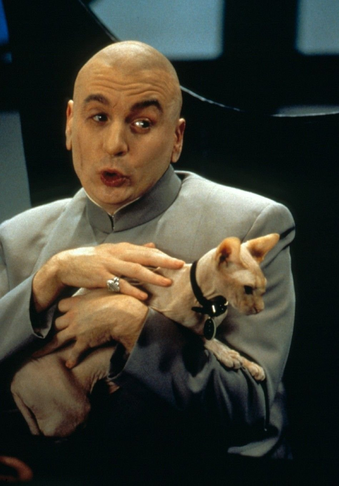
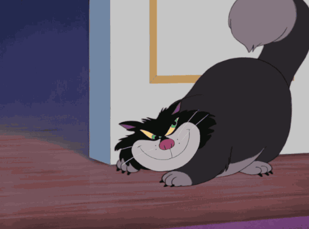

Кот злодея

Кот злодея или неоднозначного персонажа. Часто противопоставляется герою,
который любит собак, и показывает, что злодей тоже не лишен человеческих
черт. Важно знать, что коту злодея совсем необязательно быть зловещим или
вредным, но их часто делают подходящими хозяину по характеру.
Какого же кота выберет злодей?
-
Персидские: как правило, высокомерный сноб. На самом деле это не так —
персидские коты ленивые, но дружелюбные. Стереотип произошел от того,
что этих котов раньше могли позволить себе держать только аристократы:
уход за ними очень сложный.
-
Сиамские: изображаются как самые вредные даже по кошачьим стандартам.
Отчасти правда — сиамы ревнивы, сами выбирают себе хозяев и обладают
непростым характером.
-
Сфинкс: очевидно, злодеи выбирают кошек этой породы за их своеобразную
внешность. Хотя сфинксы самые ласковые и дружелюбные из всех котов,
потому что отсутствие шерсти заставляет их нуждаться в чьём-то тепле.
Где встречается
Литература
-
Если в истории участвует ведьма, то её обязательно будет сопровождать
черный кот.
-
«Три мушкетера» Дюма — кодификатор: кардинал Ришелье, который и в жизни
очень любил кошек.
-
«Гарри Поттер» — приторно-милые, сюрреалистичные персидские котята
Долорес Амбридж (не из плоти и крови, а на магически анимированных
изображениях), а также её Патронус в форме персидского кота.
Кино
-
«Из России с любовью», «Шаровая молния» и далее — кодификатор:
знаменитая персидская кошка с бриллиантовым ошейником на коленях
загадочного руководителя СПЕКТРа Блофельда.
-
Серия «Остин Пауэрс» — Доктор Зло, являющийся как раз пародией на
Блофельда. А еще этот кот теряет шерсть, на этом моменте его заменяет
сфинкс.
-
«Крёстный отец» — кошечка на коленях у дона Корлеоне. Марлон Брандо
просто подружился с бродячей кошкой и взял на съемочную площадку, и
получилась одна из самых знаменитых сцен мирового кино — «Ты просишь без
уважения!».
Мультипликация
- «Золушка» Диснея — Люцифер, кот злой мачехи.
-
«Великий мышиный сыщик» — кошка главзлодея крысы Рэтигана, которой он
скармливает своих врагов.
-
«Приключения Десперо» — есть злобный крыс, который скармливает
провинившихся жирному коту. Аллюзия на Рэттигана?
Материал взят тут
